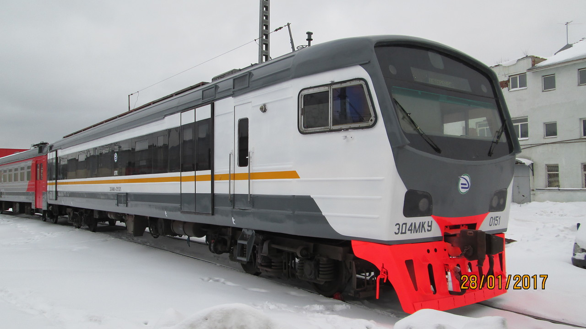
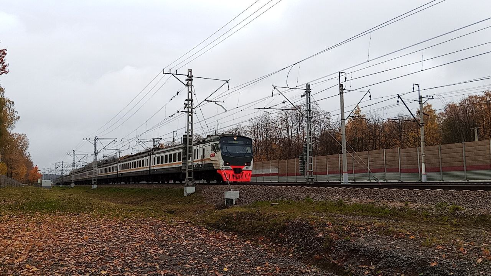

ЭД4МКУ
ЭД4МКУ — это две уникальные электрички, построенные в 11-вагонной составности с салоном повышенного комфорта. Всего было построено 2 состава с бортовыми номерами 0151 и 0153.
На данный момент работают оба состава, которые следуют по маршруту экспресса с «Киевского вокзала» до «Нары».
Общая информация
| Параметр | Значение |
|---|---|
| Дорога приписки | Россия, частные перевозчики |
| Депо | АО «Центральная пригородная пассажирская компания» |
| Серия | ЭД4 (М) |
| Завод-изготовитель | Демиховский машиностроительный завод (Демихово) 🇷🇺 |
| Заводской тип | 62-301 |
| Построен | 10.2005 — 12.2005 |
| Категория | Электропоезда |
| Текущее состояние | Эксплуатируется |
| Составность | 11 вагонов, салон повышенной комфортности |
| Всего построено | 2 состава (0151, 0153) |
Эксплуатация
- С завода поступил в собственность ООО «Пассажирские перевозки»
- 06.2016 — передан в собственность АО «Центральная ППК»
Составы ЭД4МКУ
Состав ЭД4МКУ-0151
| № | Секция | Сетевой код |
|---|---|---|
| 01 | ЭД4МКУ-015101 | 13176367 |
| 02 | ЭД4МКУ-015102 | 13260682 |
| 03 | ЭД4МКУ-015103 | 13504006 |
| 04 | ЭД4МКУ-015104 | 13260690 |
| 05 | ЭД4МКУ-015105 | 13504014 |
| 06 | ЭД4МКУ-015106 | 13260708 |
| 07 | ЭД4МКУ-015107 | 13504022 |
| 08 | ЭД4МКУ-015108 | 13260716 |
| 09 | ЭД4МКУ-015109 | 13176375 |
| 10 | ЭД4МКУ-015110 | 13260724 |
| 11 | ЭД4МКУ-015111 | 13504030 |
Состав ЭД4МКУ-0153
| Параметр | Значение |
|---|---|
| Серия | ЭД4 (М) |
| Заводской тип | 62-301 |
| Построен | 12.2005 |
| Составность | 11 вагонов |
| Секции | ЭД4МКУ-015301 — ЭД4МКУ-015311 |
Ремонт состава 0153
- 10.2009 — КР-1 Октябрьский ЭВРЗ
- 09.2012 — ТР-3 депо Данилов
- 04.2014 — КР-2 Октябрьский ЭВРЗ
- 02.2019 — КР-2 Московский ЛРЗ
- 05.2024 — ТР-3 Московско-Тульское депо (Перерва)
Маршруты работы
Составы ходили на 4 маршрутах:
🚆 Москва — Санкт-Петербург
Экспресс, 2 раза. Обслуживание: депо Санкт-Петербург-Московское (Металлострой).
🚆 Москва — Ярославль
Экспресс, 01.04.2010 — 31.01.2013. Обслуживание: депо Данилов.
🚆 Москва — Усово
Экспресс, 2017 — 2018.
🚆 Москва — Нара
Экспресс с «Киевского вокзала» до «Нары». Текущий маршрут обоих составов.
История окрасок
Первая окраска
Оригинальная окраска ЭД4МКУ.
Вторая окраска
Обновлённая схема окраски.
Третья окраска
Современная схема окраски, актуальная по настоящее время.
Фотогалерея

Первая окраска (2005–2016).

Вторая окраска (2016–2017).

Третья окраска (2017–н.в.).
Нажмите на фото для увеличения
«ЭД4МКУ — это две уникальные электрички с салоном повышенной комфортности, которые остаются одними из самых узнаваемых экспрессов на российских железных дорогах».